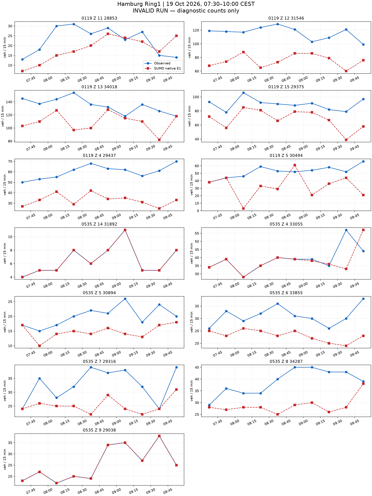
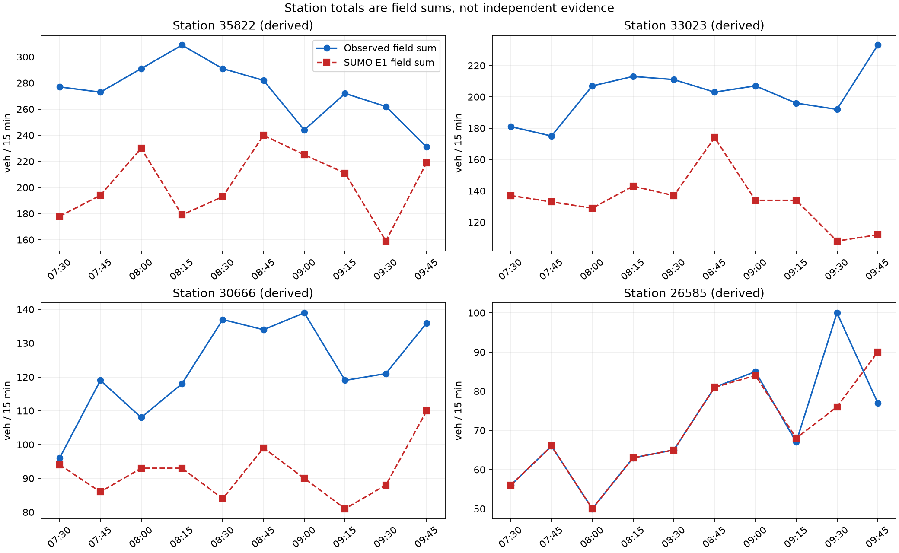
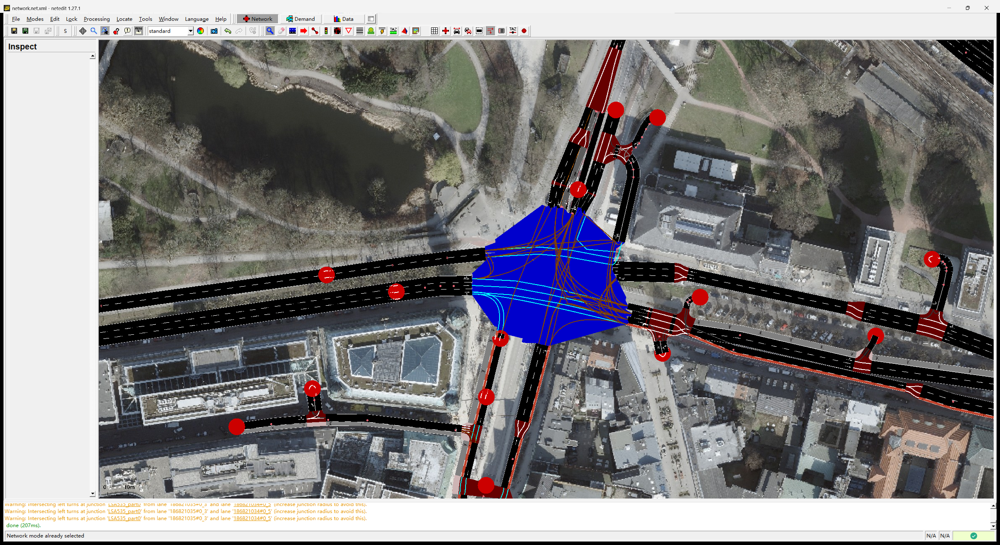

所有原生计数和运行有效性均保留。流程输出不等于零误差标定已完成。






{
"schema": "astra.hamburg-readme-final-results/v1",
"native_status": "invalid",
"execution_status": "pass",
"valid_run": false,
"exact_count_fit": false,
"formal_field_metrics": null,
"diagnostic_field_MAE": 13.653846153846153,
"diagnostic_max_abs_error": 61,
"field_rows": 130,
"station_rows": 40,
"exact_station_rows": 6,
"missing_station_rows": 0,
"diagnostic_station_MAE": 43.225,
"diagnostic_station_max_abs_error": 130,
"missing_field_rows": 0,
"exact_field_rows": 32,
"completion": {
"loaded": 8640,
"inserted": 7656,
"arrived": 7342,
"running": 314,
"waiting": 984,
"teleports": 0,
"collisions": 0,
"discarded": 0
},
"network_sha256": "cc04537494708721e1ad87409ab47cef249c3774dbaf9ed3ec7a7b01710672a4",
"control_sha256": "ea264c424f0638b711a748e83677ad6cc9077fea1ea3e3ec433e95fce3949bb1",
"measurement": "SUMO native E1 nVehContrib only",
"scenario": {
"schema": "astra.hamburg-readme-end-to-end/v1",
"status": "prepared",
"formal_result": false,
"exact_count_fit": false,
"vehicles": 8640,
"vehicle_km": null,
"field_bins": 130,
"station_bins": 40,
"profiles_used": 27,
"all_integer_rows_exact": null,
"network_sha256": "cc04537494708721e1ad87409ab47cef249c3774dbaf9ed3ec7a7b01710672a4",
"control_sha256": "ea264c424f0638b711a748e83677ad6cc9077fea1ea3e3ec433e95fce3949bb1",
"demand_prior": "Keep all requests, times and the previous major/residential share. Explore an equal split between the two existing major Z12/Z13 outlets. Their two and three passenger lanes do not identify destination shares or capacity. Different observed roads are allowed under the conditional route-exit bound and native probe. No measured OD is inferred.",
"time_prior": "All request times and target field bins unchanged. No free-flow time correction after changing the Z15 routes.",
"control_assumptions": "Official M2 alternative A, Z15 declared K9; 58 other OSM controllers retain native actuated programs. Declared 104/535 wrong-lane movements held red. Unsupported paths remain in the network and are excluded from planned lane paths.",
"unverified": "Native completion, lane realization and count fit remain to be measured.",
"geometry_source": "C:\\Users\\huqio\\Documents\\ASTRA-SUMO\\outputs\\ring1-native-fanout-curve-probe-20261021-v1\\candidate.net.xml",
"geometry_role": "Existing native 535 fanout-curve candidate; ordinary roads and complete legal movement permissions unchanged.",
"lane_waypoints": "One moving waypoint 7.5 m before the end of each assigned observation road, except short single-lane sections. Other roads have no waypoint.",
"removed_redundant_waypoints": 11091,
"geometry_validated_as_field_truth": false,
"lane_intention_assumptions": "Retain all observation-lane rear-clear holds. Apply the existing junction-body hold at 14398547, 205069138 and 18653534, each with an independently traced collision. Other junctions retain native lane choice. This is an exploratory driver assumption, not field-validated behavior.",
"demand_sha256": "206413edc6d67ca910d3f81eb29eb21d0cf5fb0e925c96b933fe1c9ae1844b7d",
"driver_source_sha256": "6dbe39c8a797e80c7a5c2a17a81c1f6bb6b63097b58cd03feefec8dacddc71fb",
"native_snapshot_directory": null,
"claim_boundary": "Declared local driver lane intention, not measured natural lane choice. The 130 real field bins and 40 derived station bins remain unchanged. Native completion and exact count fit must be assessed separately.",
"main_vehicles": 6687,
"initialization_vehicles": 1953,
"initialization_state": "Empty network at local 06:30. Preceding-hour demand builds a candidate state at 07:30. Earlier traffic and real stock remain unknown.",
"junction_body_hold_enabled": true,
"junction_body_hold_nodes": [
"14398547",
"205069138",
"18653534"
],
"monitor_source_sha256": "1847b5ce6046c344640819d8b3fcd834b44b6b6814650b384ea2b8e8b1bd1153"
},
"claim_boundary": "End-to-end workflow evidence. An invalid native run supplies diagnostics only and cannot establish accepted calibration.",
"last_complete_summary_snapshot": null
}